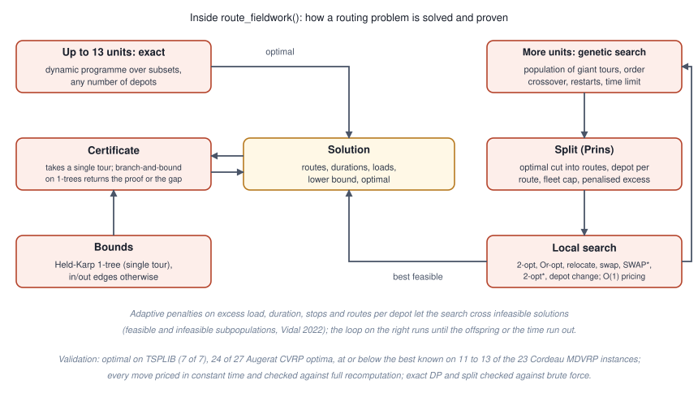

This vignette records how the package was checked: the routing solver
against public benchmark instances and other solvers, and the estimators
by simulation. The large runs were done once, outside the package build,
with the scripts of the fieldopt-core repository; the small
ones run here.
The routing solver

Figure of the chunk unnamed-chunk-2
Instances with rounded Euclidean distances, as the libraries define them, one core of a laptop, one seed; “proven” means the certificate closed the gap within ten seconds:
| Set | Instances | Setting | Optimal | Mean gap | Largest gap | Time |
|---|---|---|---|---|---|---|
| TSPLIB (51 to 101 nodes) | 7 | 2000 offspring | 7 of 7 (6 proven) | 0.00% | 0.00% | 0.7 to 4.7 s |
| Augerat A (CVRP, 31 to 79 customers) | 27 | 200 offspring (default) | 14 of 27 | 0.20% | 1.14% | under 0.4 s |
| Augerat A | 27 | 2000 offspring | 24 of 27 | 0.01% | 0.15% | 0.7 to 4 s |
| Cordeau MDVRP (50 to 360 customers, 2 to 6 depots) | 23 | 2000 offspring | 11 of 23 at or below best known | 0.29% | 1.5% | 1 to 26 s |
| Cordeau MDVRP | 23 | 20 s each | 13 of 23 at or below best known | 0.26% | 1.9% | 20 s |
Other solvers on the same instances: PyVRP through the
vrpr package reaches 18 of 27 Augerat optima in one second
and 24 in five (mean gap 0.05%); HiGHS on the compact MTZ formulation
solves the TSP up to 51 nodes (21 s) but stays 40 to 60 percent away
from the optimum after three minutes on the smallest Augerat instances,
which is why the package does not route with a general MIP solver.
Stability: across eight seeds on four instances the gap moved by less than one percentage point (standard deviation below 0.3 points).
Internal checks in the engine’s test suite: every local-search move is priced in constant time and was checked against a full recomputation on tens of thousands of accepted moves; the exact dynamic programme and the split of giant tours were checked against brute force on hundreds of random instances with one to three depots and asymmetric costs; the lower bounds never exceed the exact optimum; an independent review found and fixed four defects before release.
The estimators
Small Monte Carlo checks, run here, of the unbiasedness of the main estimators.
set.seed(4)
cells <- expand_grid(x = 1:15, y = 1:15) |> mutate(unit = paste0("c", row_number()))
areas <- expand_grid(unit = cells$unit, k = 1:3) |>
transmute(unit, establishment = paste0(unit, "-", k), area = 0.3, y = rlnorm(n(), 2, 0.5))
deff <- point_design_effect(cells, areas, n = 25, points_per_cell = 6, cell_size = 1, n_sim = 60, seed = 2)
deff |> select(bias, variance, mean_variance_estimate, deff)
#> # A tibble: 1 × 4
#> bias variance mean_variance_estimate deff
#> <dbl> <dbl> <dbl> <dbl>
#> 1 56.127 158401. 170292. 1.4716
set.seed(7)
cells <- cells |>
mutate(domain = if_else(runif(n()) < 0.2, "ab", "a"), yv = if_else(domain == "ab", 80, 10) + rnorm(n(), sd = 3))
overlap <- cells |> filter(domain == "ab")
lst <- bind_rows(overlap |> transmute(unit = paste0("l", row_number()), domain, yv),
tibble(unit = paste0("b", 1:12), domain = "b", yv = 120 + rnorm(12, sd = 5))) |>
mutate(x = runif(n()), y = runif(n()))
truth <- sum(cells$yv) + sum(lst$yv[lst$domain == "b"])
est <- map(1:40, \(k) {
sa <- cells |> select_units(n = 30, seed = k)
sb <- lst |> select_units(n = 15, method = "srs", seed = k)
tibble(hartley = dual_frame_estimator(sa, sb, "yv", "domain")$total,
fb = dual_frame_estimator(sa, sb, "yv", "domain", estimator = "fuller-burmeister")$total)
}) |> list_rbind()
est |> summarise(across(everything(), mean)) |> mutate(truth = truth, .before = 1)
#> # A tibble: 1 × 3
#> truth hartley fb
#> <dbl> <dbl> <dbl>
#> 1 6182.1 6217.7 6242.3
est |> summarise(across(everything(), \(e) round(100 * (mean(e) - truth) / truth, 2))) # relative bias in percent
#> # A tibble: 1 × 2
#> hartley fb
#> <dbl> <dbl>
#> 1 0.58 0.97Further checks live in the test suite: the Hartley allocation against
a grid search over the mixing weight, Cochran’s two-stage optimum
against enumeration, the multivariate allocation against an integer
grid, the cube method’s balance against simple random sampling, and the
survey designs produced by as_svydesign()
against the package’s own totals and replicate variances.